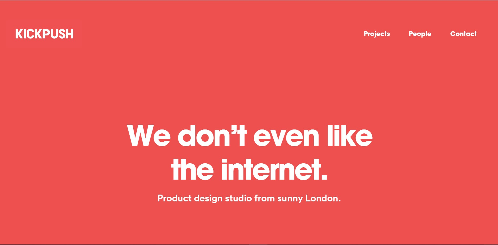
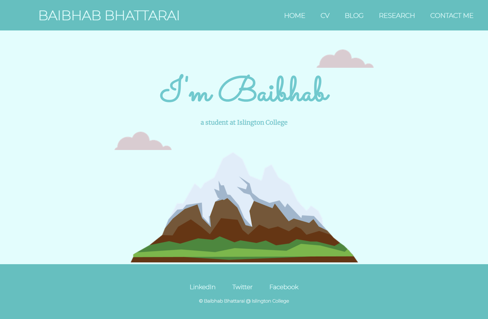
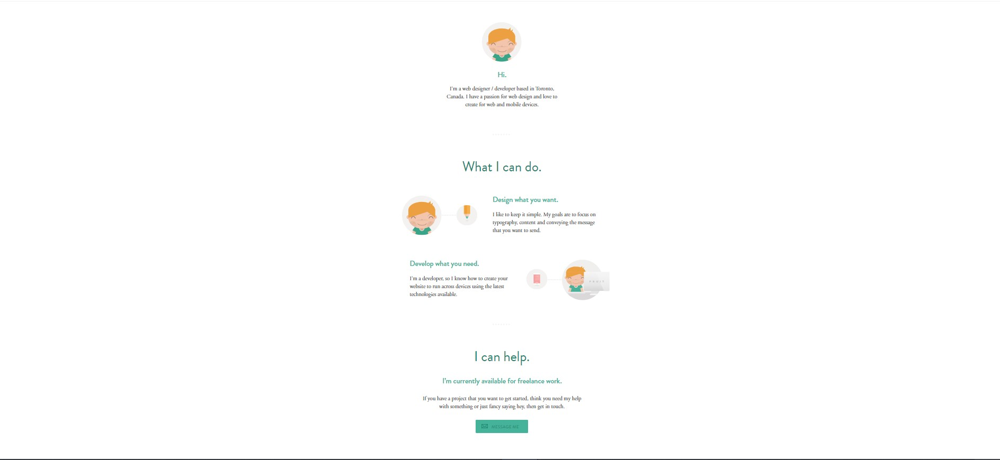
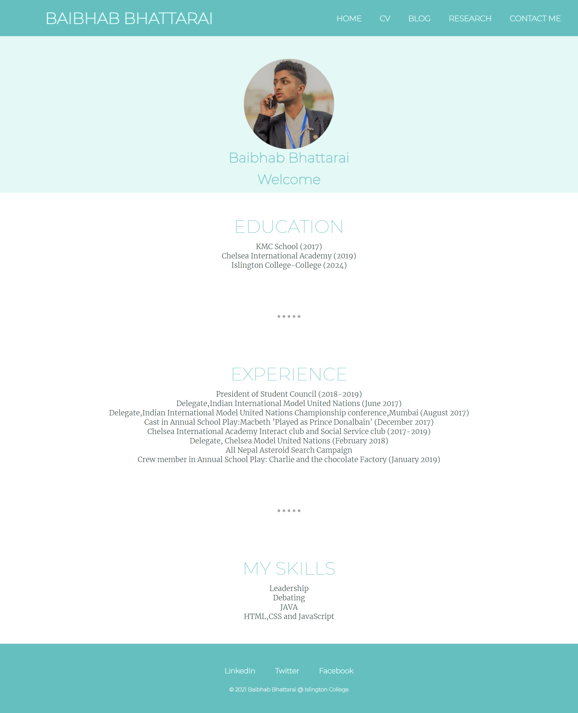
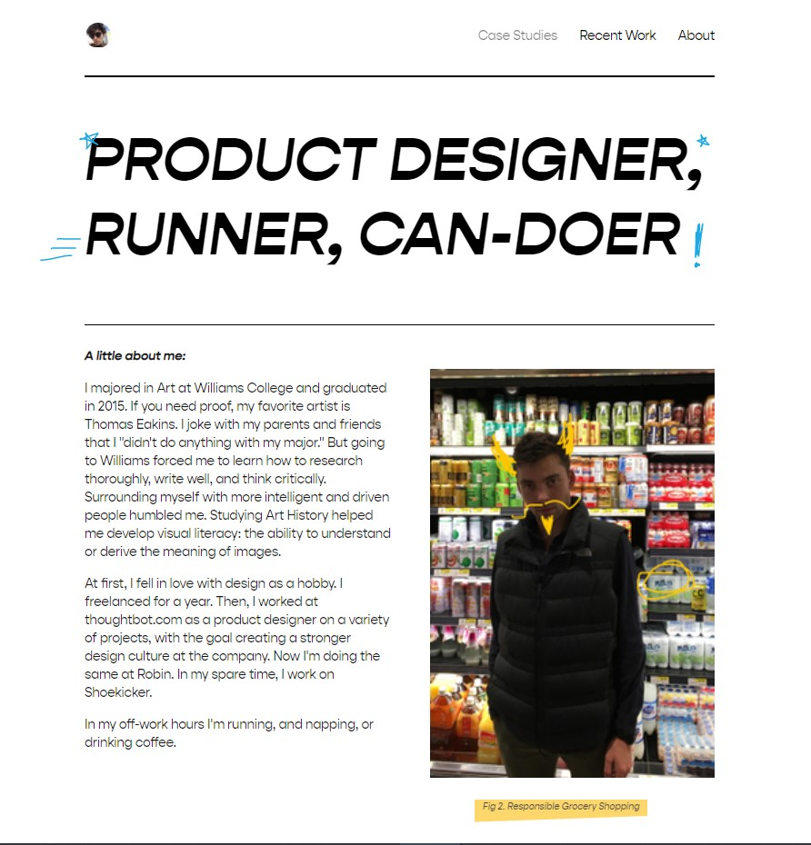
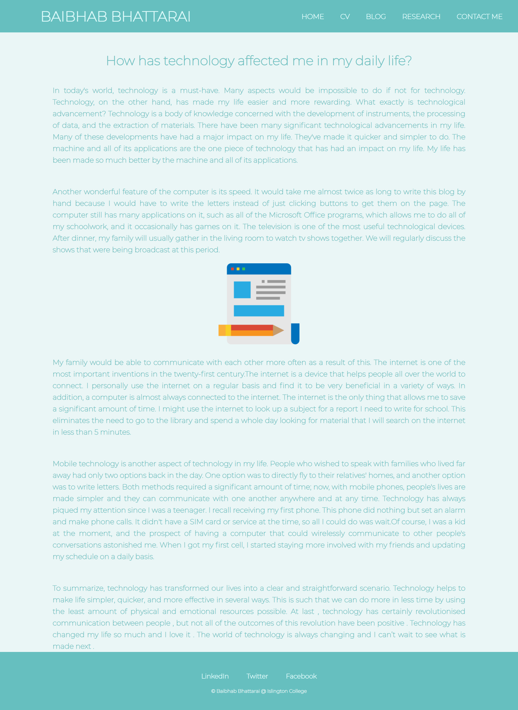
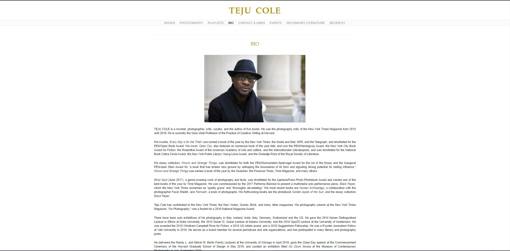
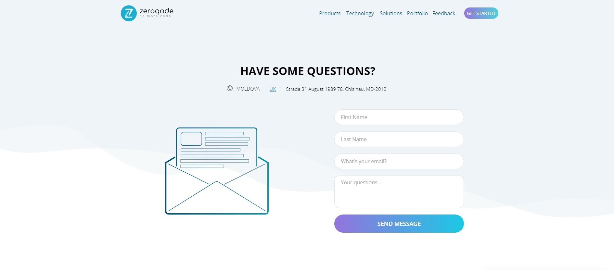
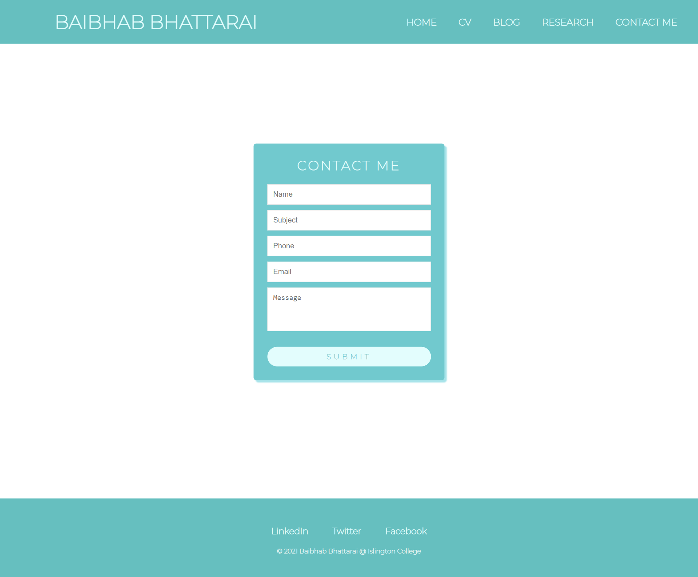

Website 1
https://kickpush.co/
https://kickpush.co/ was the first website that inspired me. This website had an effect on my home page. When I came across this, I was looking at various portfolio websites for coursework. The minimalistic design of the website influenced me. I wanted to create a design of same manner with clean background and bold representation of fonts.I've used vector images of mountain and clouds which makes the website look more appealing.In my website, the navigation bar system needed to be tweaked as well because I had to position it at the top to boost the accessibility of all the sites. My website's homepage is depicted in the diagram below.
Website 2
https://fiand1996.github.io/
My CV page was inspired from https://fiand1996.github.io/. On top, he has a really tidy picture style. He also has this sectioned look to separate his self-introduction paragraph from his career highlights. The navigation bar is simple and prominent. Most importantly, he has this website set up to quickly remind you who he is. I was able to achieve a look that was nearly identical to my portfolio page, with identical paint scheme.
Website 3
https://twnsnd.co/about/
With how simple it is, this website https://twnsnd.co/about/ inspired my blog page. He has used a simple design with a heading and a paragraph. I've used center aligned the paragraph text in my page.It has a picture, but I've used a simple vector illustration in my webpage. This is my blog page:
Website 4
http://www.tejucole.com/about-2/
I was looking for various elements on the internet when I came across this page.I liked how simple it was with the picture on the top and details in the paragraph.I followed similar approach with different color and background so that I could enhance its looks.
Website 5
https://dev.zeroqode.com/contact
https://dev.zeroqode.com/contact is the inspiration source of the contact webpage. This website focuses on the creative side of things. The overall website for the portfolio is simply stunning. I needed a contact page that looked like a visiting card, and this style suited the bill. In terms of my shape, I've taken a simple approach. There is also a form validation function. 